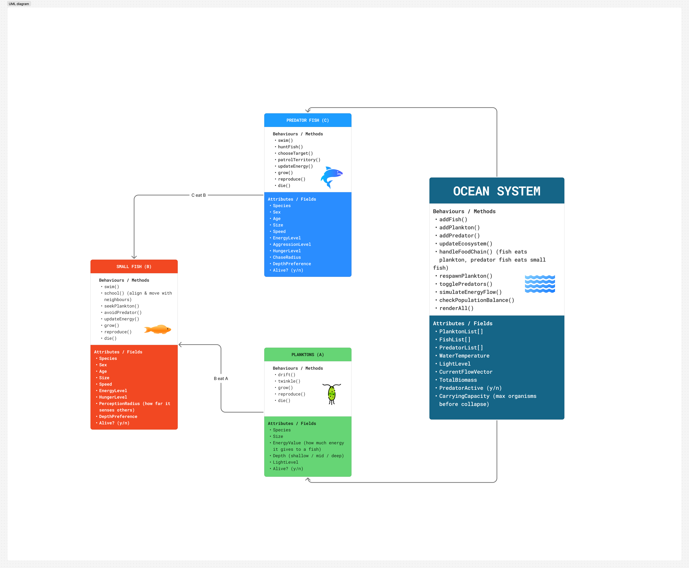
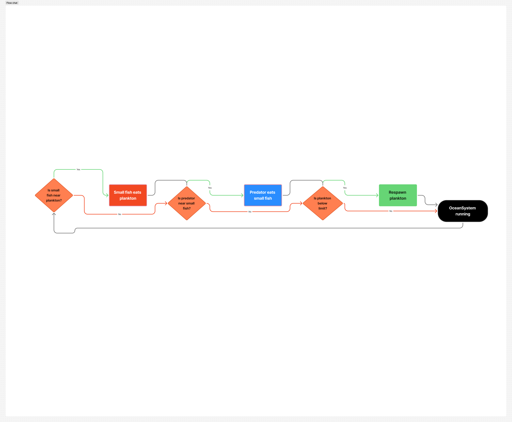

This project uses an aquatic food chain as a lens to explore object-oriented programming and emergent behaviour in p5.js. The system focuses on four key elements: Plankton, Small Fish, Predator Fish, and an OceanSystem that coordinates their interactions.
My intent was to model a simple but believable underwater ecosystem where behaviour emerges from local rules, rather than a pre-scripted animation. Each organism is implemented as a class with its own attributes and methods: plankton drift and glow, small fish school together and feed on plankton, and a larger predator fish hunts the school.
The OceanSystem manages these organisms and enforces the food chain: plankton → small fish → predator. Users can interact with the system by adding more small fish or plankton with the mouse and toggling predator behaviour. This combination of autonomy and interaction creates a dynamic, continuously changing scene.
The UML class diagram below describes the structure of the system. The core classes are: Plankton, SmallFish, PredatorFish, and OceanSystem. SmallFish and PredatorFish share movement logic, while PredatorFish extends SmallFish with hunting behaviour. OceanSystem aggregates lists of all organisms and coordinates updates each frame.

The flowchart focuses on the core decision-making loop inside the OceanSystem using only the four main elements: OceanSystem, Plankton, Small Fish, and Predator. The system runs continuously, checking for simple conditions that drive the food chain.

This flowchart represents the essential logic of the aquatic food chain system using only four key elements: Plankton, Small Fish, Predator, and the OceanSystem that manages them. The flow begins with the OceanSystem running continuously. At each step, the system checks three simple conditions.
First, it determines whether any Small Fish are close enough to nearby Plankton. If they are, the fish eat the plankton. If not, the system checks the second condition: whether the Predator is close to any Small Fish. If a predator is within range, it eats the fish.
If neither interaction happens, the system evaluates the third condition: whether the plankton population has dropped below a certain limit. If plankton levels are low, the OceanSystem respawns new plankton to keep the environment balanced. After each outcome, the flow returns to the beginning, creating a continuous cycle of feeding, hunting, and population replenishment.
This simple loop captures the core dynamics of the ecosystem: Plankton feed the Small Fish, Small Fish feed the Predator, and the OceanSystem keeps the system stable by managing population levels.
The live sketch below is hosted on the p5.js Web Editor. You can interact with the system:
I started by building a basic flocking system with a SmallFish class: each fish aligns with its neighbours, moves towards the group, and keeps a small personal space to avoid overlap. Once the schooling behaviour felt natural, I introduced Plankton as simple glowing particles scattered around the scene, and made the fish seek and eat them when they came within range.
Next, I added a PredatorFish class that extends SmallFish but overrides its behaviour to chase the nearest fish within a larger radius. Whenever the predator gets close enough, it removes that fish from the system. Over time, this creates visible patterns where the school splits, reforms, and redirects around both food sources and threats.
Finally, I wrapped everything in an OceanSystem manager that updates organisms, enforces the food chain, respawns plankton when levels are low, and exposes interactive controls via the sliders and mouse. The result is an ecosystem where motion, feeding, and hunting feel emergent rather than explicitly choreographed.